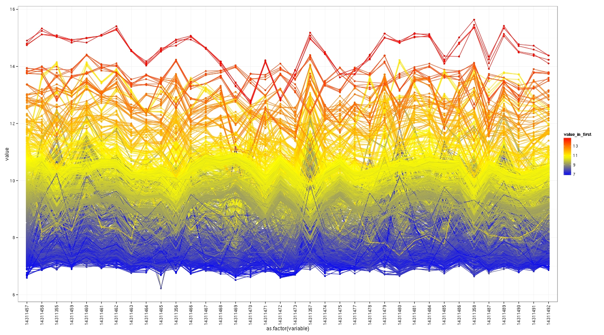

Normalisation Procedure
Overview
Normalisation is used to make the intinsities of different arrays comparable to each other. This is a two- colour miRNA experiment and follows a similar paradism to a traditional two-colour but with some specific filtering and correction stages.
Probe Level Correction
Looking at the array level, there are some potential outliers, but at the probe level we can correct some probes at extreme values (greater than 2.665 standard deviations above the mean). This will allow us to look at the profile plot again to see how this changes the overall probe patterns. It can be seen from the profile plot (log2 Green Channel Post Probe Level Correction) that array 14311357 is of concern.
Missing Values
We can correct for missing values between a primary and background channel prior to normalisation. In this experiment’s case, there were no missing intensity values in any channels.
Threshold Filtering
Prior to normalisation we can use threshold filtering to remove probes that are likely to be erroneous and aren’t miRNAs or Calibration Probes. We filter probes whose foreground intensity values are below 1.2 times their background intensity. We keep all probes which have at least 20% of samples above the filtering threshold. These arrays have probes in quadruplicate, as such these tests must occur in all four replicate probes to pass filtering. When looking at the final filtered set before normalisation (the best stage prior to normalisation to identify potential outlier arrays), we can see that array 14311357 could be cause for concern. Another function of threshold filtering is to eliminate probes of extreme intensities, as such you can see how the highest and lowest bands are removed for the most part in this plot.
Normalisation Method
Here we look at the final identification of outliers at the array level in this experiment comparing multiple Normalisation methods (Median, Loess, Quantile and VSN). Three methods are used to examine the effectiveness of these normalisation procedures; PCA, Heatmap and Profile Plot. PCA or Principle Component Analysis is a way to examine the variance of our data at the array level, tight clustering is best and outliers are usually clearly identifiable. Heatmaps are used to see how the different expression values look, and we're looking for spots that are around the same level of intensity across all arrays. Complementary to the heatmap is a dendrogram at the probe level and array level, this is a euclidian distance measure between arrays and is also a good method to look for outliers with. Finally, the profile plot shows how the intensities vary at the probe level across arrays. The data that is put into these plots is normalised Green (reference) channel using the method stated, the top 50 unique miRNAs are used with the highest standard deviation, then this data is log2 transformed.
No Normalisation
As a baseline, this is how the data looks without any normalisation procedure performed.
Median
Median Normalisation - From the hierarchical clustering and PCA plot, 14311470 and 14311472 could be potential outliers (Both Lymphoma Samples).
Loess
Loess Normalisation suggests the same as median (similar methods).
Quantile
Quantile suggests the same as median and loess, that 14311470 and 14311472 could be outliers.
VSN
VSN (Variance Stabilising Normalization) - Suggests the same as the above methods.
Spike
Spike-in Normalisation (Uses spike probes for normalisation) - This has the tightest PCA clustering of all the normalisation methods however, it detects 14311357 as an outlier, unlike any of the other methods.